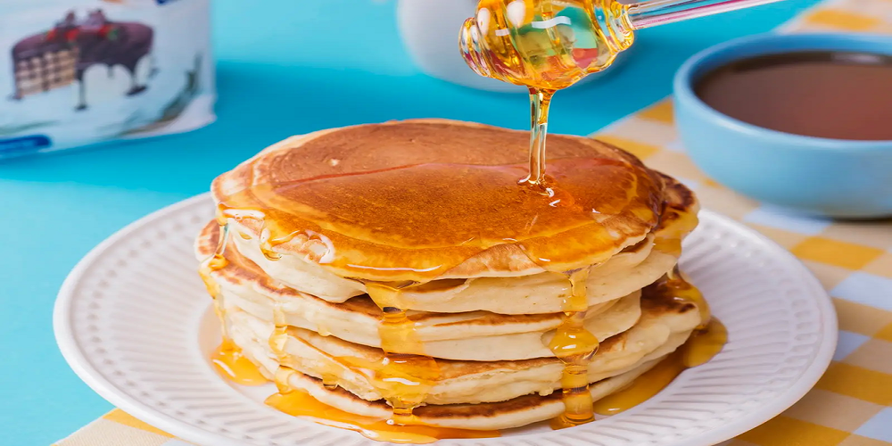

Receita de Panqueca Americana
Uma delícia versátil e rápida, perfeita para o café da manhã ou brunch. As panquecas americanas são fofinhas e levemente adocicadas, ideais para serem servidas com mel, xarope de bordo, frutas frescas ou até mesmo um toque de manteiga. Um clássico que agrada a todos!
Tempo de preparo
- Total: Aproximadamente 30 minutos
- Preparo: 10 minutos
- Cozimento: 20 minutos
Ingredientes
- 1 ovo
- 1 xícara de farinha de trigo sem fermento
- 1 colher de sopa de açúcar
- 3 colheres de chá de fermento em pó
- 1/4 de colher de chá de sal
- 3/4 xícara de leite
- 2 colheres de sopa de óleo vegetal
Modo de Preparo
- Bata o ovo até formar uma espuma.
- Adicione e bata o açucar, oléo e leite.
- Em seguida acrescente a farinha de trigo, o fermento e o sal. Note que vai ficar um pouco espessa, o que é normal para este tipo de panqueca.
- Passe óleo em uma panela (de preferência antiaderente) e esquente.
- Coloque 1/4 de xícara da massa na panela e deixe “assar” até formar furinhos em cima, vire e deixe assar o outro lado até ficar dourado.
- Sirva com mel, geleia, frutas, iogurte ou o acompanhamento de sua preferência.
Nutrição
A tabela abaixo mostra os valores nutricionais aproximados por porção.
Calorias
135kcal
Carboidratos
18g
Proteína
4g
Gordura
5g

Desafio do Frontend Mentor
Desenvolvido por Ananda Shayla